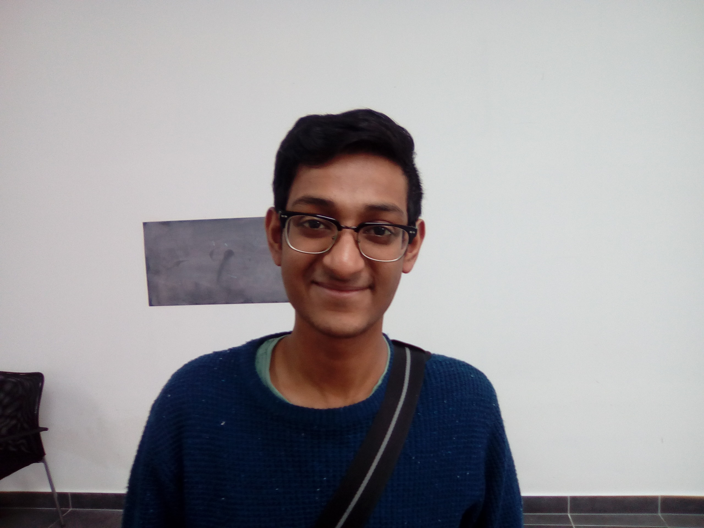

Episode 004: Bhargav Srinivasea Desikan about Google Summer of Code

Bhargav Srinivasea Desikan at PyConSK 2017. image rights: cc-by-sa 4.0, Horst JENS
- episode: 004
- slug: 20170312_soc/index.html
- date: 2017-03-12
- duration (hh:mm:ss): 0:04:23
- speaker: Bhargav Srinivasea Desikan, Horst JENS
- location: Bratislava, Slovakia
- geo: lat: 48.151052, long: 17.070476
- language(s): english
- license: creative-commons cc-by 4.0
- tags: Google, Summer of Code, gsoc, learning, open source, floss, foss, job, student, recruiting, volunteering
description
Bhargav Srinivasea Desikan talks in this interview at the PyConSK conference 2017 about his own experience with Google Summer of Code. He explains how he come first into contact with open Source projects and how the Google Summer of code program changed his life.
Links:
audio files
https://archive.org/details/20170311Pyconsk2017BhargavSrinivaseaDesikanAboutGoogleSummerOfCodeProgram
youtube
Talks from Bhargav at PyConSK 2017 conference should be online soon on youtube at the PyConSK channel